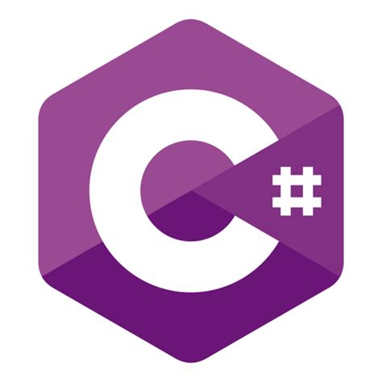
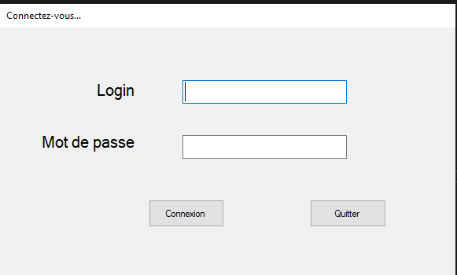
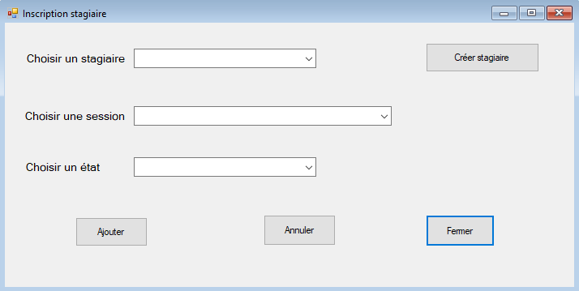

GSB Frais - Application de gestion des frais professionnels
Contexte
L’Institut Claude Gaston Octave (I-CGO) est un centre de formation professionnelle qui utilise actuellement une base Access pour gérer ses stages. Cette solution n’étant plus adaptée, une nouvelle application est en cours de développement afin de répondre aux besoins actuels en matière de gestion de formation. L’objectif principal est de permettre aux agents de gérer efficacement les stages proposés, en centralisant toutes les informations importantes.
- L'application doit permettre la création et la gestion des fiches de stage, en renseignant leur intitulé, leur durée, leur contenu et le nombre de places disponibles.
- Il sera possible de planifier différentes sessions pour un même stage, en continu ou de manière étalée.
- Chaque stage est composé de modules de formation qui peuvent être communs à d’autres stages.
- Des formateurs seront affectés aux sessions en fonction de leur domaine de compétence et de leur agence d’appartenance.
- Les stagiaires pourront être inscrits aux sessions, avec un suivi de leur statut et de leurs coordonnées.
- L'application permettra aussi de gérer les agences de formation qui accueillent les stages.
Réalisation
- L'application est réalisée en C# dans Visual Studio en suivant une architecture en trois couches.
- La couche présentation gère les interfaces utilisateur.
- La couche métier contient la logique de traitement.
- La couche d’accès aux données communique avec la base de données MySQL.
- Cette séparation permet une meilleure organisation du code, facilite la maintenance et l’évolution future de l’application.
- L’interface doit être simple et intuitive pour permettre une prise en main rapide par les agents.
- Les données sont stockées dans une base MySQL structurée avec des relations entre les différentes entités comme les stages, les modules, les formateurs, les stagiaires et les agences.
Compétences mobilisées
- - Exploiter des référentiels, normes et standards adoptés par le prestataire informatique (structure imposée de l'application et base de données existante).
- - Traiter des demandes concernant les applications (Gestion des besoins utilisateur en respectant les cas d'utilisation).
- - Participer à la valorisation de l’image de l’organisation sur les médias numériques en tenant compte du cadre juridique et des enjeux économiques (application moderne et ergonomique).
- - Évaluer les indicateurs de suivi d’un projet et analyser les écarts (ganttProject).
- - Accompagner les utilisateurs dans la mise en place d’un service (Documentations technique et utilisateur).
Captures d'écran

Page de connexion

Inscription d'un stagiaire à une session
Code source
Le projet est disponible sur GitHub :
https://github.com/Meissanh/Appli-ICGO